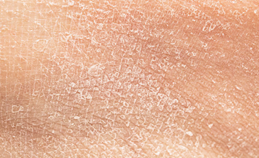
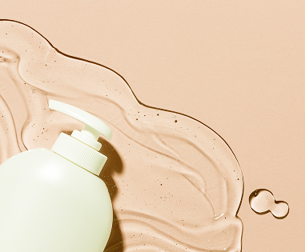
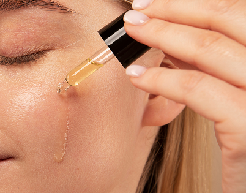

Pelle secca
Se la tua pelle si sente secca, tesa o ruvida, scegli una routine quotidiana idratante per nutrire e ricostituire la tua pelle.
Se hai la pelle disidratata anche in pieno inverno, è importante utilizzare formule che ti aiutino a levigare, ammorbidire e bilanciare la tua pelle.
Cosa scegliere
Detergente
Elimina le impurità con un Detergente Viso per Pelli Secche.
- Rimuove delicatamente impurità, sporco e sebo in eccesso
- Formulato con Olio di Nocciolo di Albicocca
- Lascia la pelle pulita, morbida e idratata
Tonico
Leviga la Pelle con un Tonico per Pelle Secca.
- Formula delicata e senza alcool
- Equilibra e tonifica la pelle con un delicato effetto astringente
- Formulato con estratto di cetriolo e allantoina
- Lascia la pelle morbida, liscia e idratata
Siero idratante
Leviga la Pelle con un Siero Idratante per Pelle Secca.
- Aiuta a ridurre visibilmente le rughe per un aspetto più levigato e dall'aspetto più giovane
- Formulato con il 15% di Glicerina vegetale e Sodium Dextran Filter
- Leviga, rimpolpa e idrata intensamente la pelle


Consigli aggiuntivi
Applica un Olio Concentrato per la Notte
Se la tua pelle appare spenta o stanca, rigenerala e aumentane la luminosità mentre dormi con un trattamento viso notturno. Durante la notte la pelle è più ricettiva a rigenerare la sua salute.
Protezione solare al mattino
Che la tua pelle sia secca, grassa o sensibile, difenderti dagli aggressori esterni è un passaggio essenziale nella tua routine quotidiana.
Applica una maschera all'avocado
3 volte a settimana, offriti un'idratazione cremosa con le maschere viso all'avocado per donare un boost di idratazione alla tua routine skincare per pelle secca.